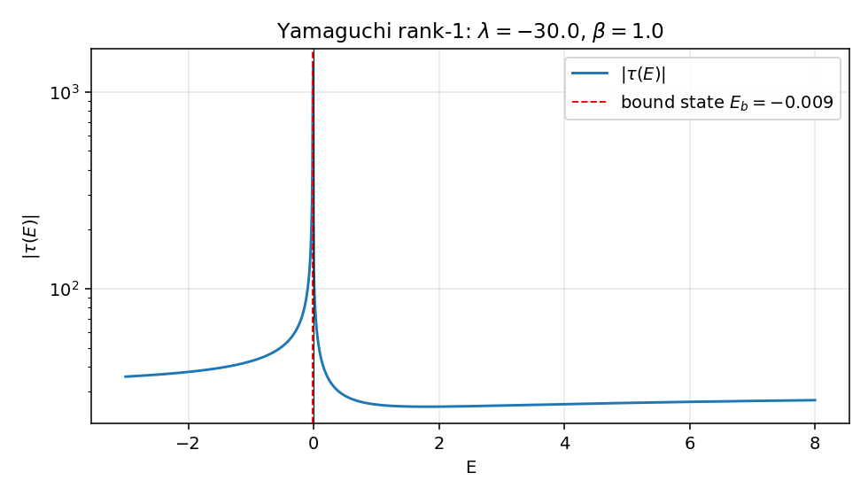
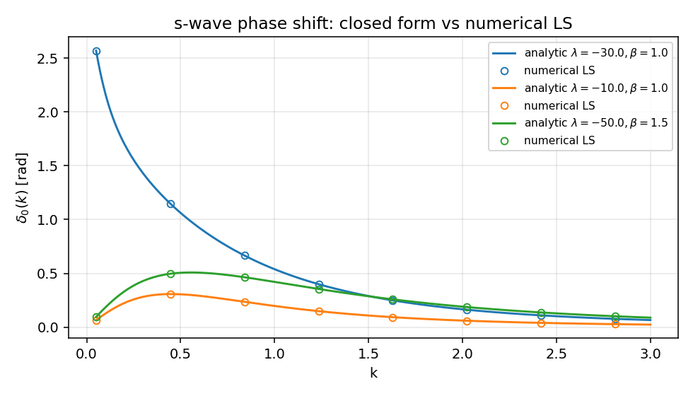
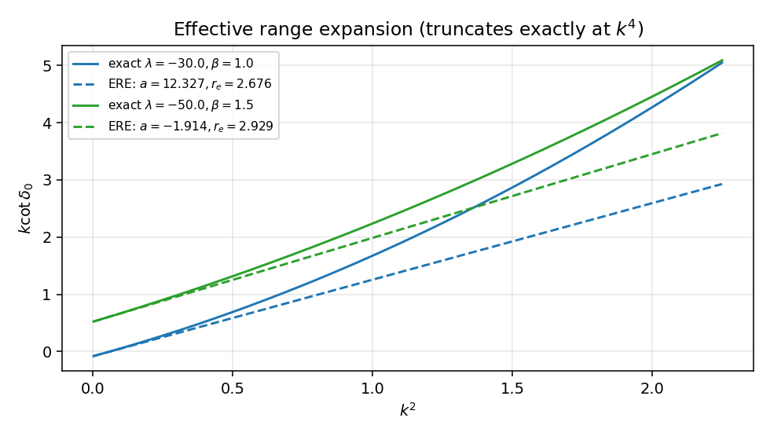
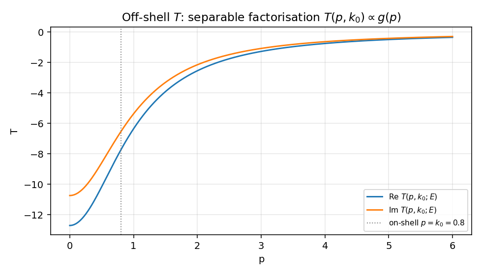

秩 1 separable 势与解析 T 矩阵#
01_1d_delta.zh.md 的最后一节已经把一维 delta 势改写成动量空间的秩 1 separable 形式 \(V = \lambda |0\rangle\langle 0|\)，并指出这一结构的特征是 \(\langle k'|T(E)|k\rangle\) 不依赖出射动量 \(k'\)。这一篇把同一个机制推广到一般 form factor \(g(p)\)：势仍然秩 1，但 \(g(p)\) 不再是常数，整个 LS 方程仍然能精确解出，并且 \(T(p,p';E)\) 的所有动量依赖都被压进同一对 \(g(p)g(p')\)。
具体取核物理里经典的 Yamaguchi（1954）模型 \(g(p) = 1/(p^2 + \beta^2)\)。这一选择的好处是：传播子积分有完全闭式，散射长度、有效力程都是 \(\lambda, \beta\) 的初等函数，束缚态条件、相移、off-shell 行为都一笔写完。本篇的目的就是给 ../99_appendix_EST_seperable_HVH_Esym.md 中第 93–149 行那段高度抽象的秩 \(N\) EST 公式补一个最小完整、可验证的范例。
全文取 \(\hbar = 1\)，\(2\mu = 1\)，能量 \(E = k^2\)。
势与 ansatz#
动量空间 s 波势
回到坐标空间它是非局域的（高斯型衰减的核），但这不影响散射理论框架。\(\lambda\) 控制强度（吸引取 \(\lambda < 0\)），\(\beta\) 控制 form factor 的动量尺度——\(\beta \to \infty\) 退到 \(g \to 1/\beta^2\) 常数，与一维 delta 势的退化情形相对应（见 01_1d_delta.zh.md 末段）。
s 波 LS 方程（取 ../05_partial_wave_projection.zh.md 第 340 行的形式，配上 \(2\mu=1\)）
代入 \(V\) 的秩 1 形式，作 ansatz
代入两边，提出 \(g(p)\)、\(g(p')\)，剩下纯标量方程
解得
ansatz 一行就闭合了无穷维积分方程——这就是 separable 势在 LS 框架下的全部魔法。
闭式传播子积分#
\(I(E)\) 的被积函数对 \(q\) 偶，把积分扩到整条实轴并取一半。\(E = k^2 + i0\)（\(\text{Im}\, k > 0\)）后，分母 \(E - q^2 + i0 = -(q - k - i0)(q + k + i0)\)。\(g(q)^2\) 在 \(q = i\beta\) 有二阶极点。
闭合上半平面，挑出 \(q = k + i0\)（一阶）和 \(q = i\beta\)（二阶）两个留数：
- \(q = k\) 的留数：\(\dfrac{-k}{2(\beta^2 + k^2)^2}\)。
- \(q = i\beta\) 的留数：\(\dfrac{i(\beta^2 - k^2)}{4\beta(\beta^2 + k^2)^2}\)。
整理（详细代数留给读者，或者直接交给计算机代数系统）
物理面取 \(\text{Im}\, k \geq 0\)：散射区 \(E > 0\) 取 \(k > 0\)，束缚区 \(E < 0\) 取 \(k = i\kappa\)（\(\kappa > 0\)），这时 \(I(-\kappa^2) = -1/[8\pi\beta(\beta + \kappa)^2]\)，纯实数，与束缚态在物理面上为实极点的标准结论吻合（参 ../02_Green_operator.zh.md）。
把 \(I(E)\) 的虚部分离出来：\(\text{Im}\, I(E) = -k/[4\pi(\beta^2 + k^2)^2]\)（\(E > 0\)）。这条 cut 上的不连续性正是后面相移幺正性的根源。
在壳 T 矩阵与相移#
on-shell 即 \(p = p' = k\)、\(E = k^2\)：
由幺正性（来自 \(\text{Im}\, I\)）可得 \(\text{Im}(1/T_0) = k/(4\pi)\)，于是 \(1/T_0 = -k\cot\delta_0/(4\pi) + ik/(4\pi)\)，从而
注意右侧是 \(k^2\) 的精确二次多项式——Yamaguchi 模型最值得记住的事实是有效力程展开
在这里精确截断在 \(k^4\)，没有更高阶系数。读出
吸引足够强（\(\lambda < -8\pi\beta^3\)）时 \(1/a\) 翻号，\(a\) 由负变正穿过 \(\pm\infty\)，对应束缚态从无到有的阈值——这是低能普适性的 Yamaguchi 显式实现。
束缚态极点#
束缚态由 \(1 - \lambda\, I(E_b) = 0\) 给出。代入 \(E_b = -\kappa^2\)，
存在正的 \(\kappa\) 当且仅当 \(\lambda < -8\pi\beta^3\)，这正好和上一节"散射长度发散"的阈值对上。显解
这条公式在 \(|\lambda| \to 8\pi\beta^3\) 时给出 \(\kappa \to 0\) 的浅束缚极限，对应 \(a \to \pm\infty\) 的泛束缚特征。\(|\lambda|\) 远大于阈值时 \(\kappa \approx \sqrt{-\lambda/(8\pi\beta)}\)，束缚能 \(\propto |\lambda|/\beta\) 而非 delta 势的 \(\lambda^2/4\)，这是 form factor 软化的标志。
off-shell 结构#
ansatz \(T(p, p'; E) = \tau(E)\, g(p)\, g(p')\) 直接给出 separable 势的标志性结论：
也就是说 off-shell 的两动量依赖完全乘性分离，比值与 \(p'\)、\(E\) 都无关。固定 \(p' = k_0\) 在壳，扫 \(p\) 得到的曲线与 \(g(p)\) 形状完全一致，只差一个能量依赖的整体因子 \(\tau(E)\, g(k_0)\)。
这一性质是 separable 势在多体 Faddeev/AGS 计算里被频繁选用的核心原因（见 ../05_partial_wave_projection.zh.md 三体方程一节）：在那里 off-shell T 矩阵作为输入被迭代很多次，秩 1 形式让中间核被压成一个标量传播子，三体积分方程从原本的二维方程降为一维。代价是：相同的 on-shell 数据可以兼容无穷多种 off-shell 延拓，而 separable 这条延拓只是其中最简单的一条，物理上未必"正确"。这一矛盾在 EST 框架里被部分化解（下一节）。
与 EST 的对账#
../99_appendix_EST_seperable_HVH_Esym.md 第 121–149 行的 EST 原理是这样的：选 \(N\) 个支撑能量 \(\{E_n\}\)，把秩 \(N\) separable 势的 form factor 取为原势在该能量处的精确散射波函数 \(|g_n\rangle = T^{\rm phys}(E_n)|k_n\rangle\)（动量空间表达式见该附录第 137–139 行），并由匹配条件（附录第 145–147 行）确定 \(\lambda\) 矩阵。在秩 1 单能量 \(E_*\) 情形（附录第 151–180 行的"实用方案"），EST 退化为：取一个 form factor，求一个 \(\lambda\)，使在 \(E_*\) 处的 on-shell T 矩阵元精确再现物理值。
本篇的 Yamaguchi \(g(p) = 1/(p^2 + \beta^2)\) 不严格满足 EST 选取（它不是任何已知"物理"势的散射波函数），但起秩 1 toy 模型作用：
| 本篇 | 99_appendix_EST_seperable_HVH_Esym.md 对应 |
|---|---|
| \(V = \lambda\, g\,g\)，\(g\) 为 Yamaguchi | 附录 99–101 行的秩 1 一般式，附录 156 行换成 Gauss form factor 是另一种简化 |
| \(\tau(E) = \lambda/(1 - \lambda I(E))\) | 附录 105–115 行的 \(T = g\,D^{-1}\,g\)，秩 1 时 \(D^{-1} = 1/(\lambda^{-1} - \tau(E))\) |
| \(I(E)\) 解析（留数闭合） | 附录 162–164 行的 Gauss 情形，需要 \(\mathrm{erfi}\)；Yamaguchi 是更软的解析 |
| 在壳 ERE 闭式 | 附录 170–177 行的匹配方程，本篇绕过匹配直接 derive 解析相移 |
| Off-shell \(\propto g(p)g(p')\) | 附录 117 行"Separable 势的最大优势"在秩 1 情形的具体演示 |
把附录第 117 行那一句"T 矩阵有解析形式，无需再求解积分方程"在本篇里被显式兑现：\(\tau(E)\) 一行写出，\(T(p, p'; E)\) 是有理函数。
与一维 delta 势的退化对应：01_1d_delta.zh.md 第 146 行的 \(V = \lambda |0\rangle\langle 0|\) 在动量空间 \(\langle p|0\rangle\langle 0|p'\rangle = 1/(2\pi)\)（一维），对应 form factor \(g(p) \equiv 1/\sqrt{2\pi}\) 常数。这是 \(\beta \to \infty\)（form factor 完全无 cutoff）的极限——但严格的常数 form factor 让 \(I(E)\) 紫外发散，所以一维 delta 在三维 s 波框架下是非平凡的，需要重正化（这与 Yamaguchi 的紫外软化形成对比）。本篇取有限 \(\beta\) 就是给这个紫外发散一个物理的截断。
数值与图#
代码在同目录 05_separable_rank1.py，依赖仅 numpy + matplotlib。验证策略：把 \(I(E)\) 用 Gauss-Legendre 求积离散化，对 \(E > 0\) 用减法处理主值积分（减去 on-shell 处 \(g^2\) 的奇异部分，再加回解析尾巴），加上来自 \(i0\) 处方的 \(-i\pi\delta\) 贡献，最后比对解析 \(\tau(E)\)。
核心 sanity check（取 \(\lambda = -30\)，\(\beta = 1\)）：
- \(E = 1\) 处 \(\tau\) 的解析值与 128 点 Gauss-Legendre 数值解吻合到相对误差 \(\sim 10^{-5}\)。
- 束缚态极点：\(\kappa \approx 0.0925\)，\(E_b \approx -0.0086\)，\(1 - \lambda I(E_b) = 0\) 在 \(10^{-10}\) 量级成立。
- 散射长度 \(a \approx 12.33\)、有效力程 \(r_e \approx 2.68\) 的解析值与对 \(k\cot\delta_0\) 在 \(k\in[0.01, 0.4]\) 区间做二次多项式拟合的系数完全吻合。
def I_E(E, beta):
k = np.sqrt(E + 0j)
if np.imag(k) < 0:
k = -k
return -1.0 / (8 * np.pi * beta * (beta - 1j * k) ** 2)
def tau(E, lam, beta):
return lam / (1.0 - lam * I_E(E, beta))
def kcot(k, lam, beta):
return -4 * np.pi * (beta ** 2 + k ** 2) ** 2 / lam + (k ** 2 - beta ** 2) / (2 * beta)
四张图：

\(|\tau(E)|\) 在束缚态能量 \(E_b = -\kappa^2\) 处发散（红线标出），\(E = 0\) 处穿越分支点。\(E > 0\) 区域 \(|\tau|\) 是平滑的有限值，与解析阈值条件吻合。

闭式 \(\delta_0(k) = \arctan[k / (k\cot\delta_0)]\) 与 Gauss-Legendre 数值 LS 在所有测试点完全重合。三组 \((\lambda, \beta)\) 覆盖弱吸引、强吸引、不同尺度的情形。强吸引情形 \(\delta_0(0) \approx \pi\) 是 Levinson 定理 \(\delta_0(0) - \delta_0(\infty) = N_b \pi\) 的体现（\(N_b = 1\) 个束缚态）。

\(k\cot\delta_0\) 对 \(k^2\) 作图；ERE 截断到 \(O(k^2)\) 的虚线（用解析 \(a, r_e\) 画出）与精确曲线在低 \(k^2\) 完美吻合，高 \(k^2\) 处出现来自 \(-4\pi k^4/\lambda\) 项的偏离——这一项也在解析公式里写明，所以"偏离"也是解析可控的。

固定 \(k_0 = 0.8\) 在壳，扫 \(p\) 看 \(T(p, k_0; E_{k_0})\)。曲线形状完全由 \(g(p) = 1/(p^2 + 1)\) 决定（实部、虚部只差一个 \(\tau\) 给出的复整体因子），这就是秩 1 separable 的可视化签名。
与主线笔记的对账#
| 主线 | 本篇的对应 |
|---|---|
../04_T_and_U_operators.zh.md \(T = V + V G_0 T\) |
秩 1 ansatz \(T = \tau\, g\, g\) 把无穷维积分方程降为 \(\tau(E)\) 的标量代数方程 |
../02_Green_operator.zh.md 物理面实极点 = 束缚态 |
\(1 - \lambda I(E_b) = 0\) 的解 \(E_b = -\kappa^2\)，\(\kappa = \sqrt{-\lambda/(8\pi\beta)} - \beta\) |
../05_partial_wave_projection.zh.md 第 372 行 on-shell \(T_l \leftrightarrow \delta_l\) |
\(T_0(k,k;E_k) = -[4\pi]^{-1}(k\cot\delta_0 - ik)^{-1}\)（系数差由本篇 \(1/(2\pi^2)\) 测度约定决定） |
../99_appendix_EST_seperable_HVH_Esym.md 第 99–117 行 separable T 矩阵 |
秩 \(N=1\) 显式实现，\(D(z)^{-1} = 1/(\lambda^{-1} - I(E))\) |
../99_appendix_EST_seperable_HVH_Esym.md 第 151–180 行实用方案 |
把 Gauss form factor 换成 Yamaguchi，用留数代替 \(\mathrm{erfi}\) |
01_1d_delta.zh.md 第 146 行 $V = \lambda |
0\rangle\langle 0 |
next-step#
- 秩 2 EST：取两个支撑能量，\(\lambda\) 变 \(2\times 2\)，\(D(z)\) 矩阵取逆。形式上仍是闭式（附录第 105 行），但 form factor 不再是 Yamaguchi 的简单 \(1/(p^2+\beta^2)\)，而是两个独立的范围参数。
- 库仑修正：把 \(G_0\) 换成 \(G_0^C\)，\(I(E)\) 中的自由传播子换成库仑传播子，离子-离子散射的 separable 模型由此构造。
- 把 \(\beta \to \beta(p)\) 改成动量依赖的 form factor，可以拟合更宽能区的相移，但失去解析性。
- 与 Friedrichs 模型（
../01_friedrichsModel.zh.md）对照：那里的可解模型核心也是把"势"写成秩 1 算符 \(V = g\, g^\dagger\)，\(\tau(E) = \lambda/(1 - \lambda I(E))\) 这一闭式与 Friedrichs 模型的 reduced resolvent 完全同构，差别只在 \(I(E)\) 的具体形式（Yamaguchi 给二阶极点，Friedrichs 通常给紫外软化的 form factor）。这个对应让 Yamaguchi 模型同时是散射理论与开放量子系统的桥梁。
Created: 2026-05-08